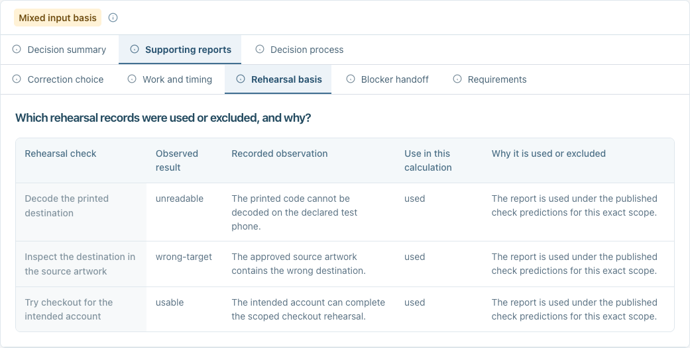

Leah is responsible for 120 usable gift kits by the end of a one-day preparation window. Production has assembled them. Marketing expects recipients to scan the printed code, reach the intended destination and complete checkout. Finance has allowed up to $600 for correction.
Then a scan fails. Ordering replacement inserts looks like a quick response: the reprint quote is $100, well below the boundary. But Leah would own the consequences if the new inserts still sent recipients to the wrong destination. She needs to establish the correction's scope before committing the team.
Start with the records, not a favored fix.
The recipient journey contains several distinct steps. A result about checkout does not automatically establish that the printed code can be decoded or that the source artwork points to the right place. Leah gathers three supplied observations:
| Check | Recorded result | What it tells Leah |
|---|---|---|
| Decode the printed code | Unreadable | The printed code cannot be decoded on the declared test phone. |
| Inspect the source artwork | Wrong destination | The approved source artwork contains the wrong destination. |
| Rehearse checkout | Usable | The intended account can complete the scoped checkout rehearsal. |
These records describe the same batch, insert and digital revisions, test phone and recipient account. That scope matters. A successful test from an earlier configuration cannot silently stand in for the current kits.
Ask which explanations the observations support.
Decision Lab's authored review examines the combinations of declared faults compatible with the fixed observations. In this case, its completed finding establishes both the printed-code fault and the wrong-destination fault. The usable checkout record does not remove either of them.


This is an instance of the evidence assessment pattern. The question concerns what the recorded evidence establishes across the admissible interpretations. Leah is not choosing the explanation she would prefer; the assessment checks the conclusions supported by the declared observations and model.
The model considers three specified faults. It does not diagnose every possible failure in a real campaign, authenticate the source messages or assign probabilities to unlisted explanations. Those boundaries tell Leah when she needs better records or a broader model rather than greater confidence in the same finding.
Carry the finding into the work specification.
The two established faults give production a concrete requirement: repair the printed code and the destination. Replacing inserts alone leaves the destination fault unresolved. Repairing only the digital journey leaves the unreadable printed code in place.
A meeting or spreadsheet could reach the same conclusion if the team carefully retained the observations, their scope and every supported fault combination. The configured assessment makes that basis available for inspection and carries its finding into the next question. Leah can point to why a cheaper partial fix is insufficient before anyone orders it.
There is also a separate verification task after correction. A successful checkout recorded before the work cannot establish that the newly corrected kits passed a fresh rehearsal. Diagnosing the present faults defines the work; it does not establish that the work has happened.
The team now knows what it must compare.
Leah can give production and finance a bounded answer: this case needs a complete correction addressing both faults. She has not yet chosen a supplier, authorized expense or promised that a package will meet the cutoff.
That leaves one clear next decision: when does paying $400 instead of $300 protect the handoff deadline?